Application Security
In Chapter 2, we learned about the framework and environmental layer of your OneStream security. Then, in Chapters 3 and 4, we introduced the second layer of security within each environment, consisting of the application and system security layer.
In this chapter, we will take a deep dive into all security elements inside the application layer. As mentioned previously, the application layer of security is the one that most directly impacts your end-user’s experience. It is the layer of security that will determine not only how secure your data is, but also drive overall end-user navigation and ease of use for your user population.
Many things contribute to the overall end-user experience within an application that go above and beyond a user’s security. Things like your workflow design, report formatting, consolidation, and calculation performance, the level of data available, how frequently data is updated, and so on. But the one that typically leaves a first impression, and which puts guardrails around your end-users, is their application security.
Imagine entering a community with streets and homes in every direction but no street signs or house numbers posted anywhere. If you are looking for a particular home for which you have been provided the keys, but with no signs or house numbers, you may feel a bit overwhelmed.
Application security, if not applied correctly, can also leave a user feeling lost. You may be an end-user logging into OneStream regularly to perform tasks like running reports, entering key metrics, forecasting weekly sales, etc. But if you have access to everything upon entering OneStream, you will inevitably feel a bit lost. In addition to feeling lost, you may make wrong turns in OneStream and end up running reports for items to which you should not have access. Likewise, you could just end up clicking through various screens, trying to remember where you go to handle a task.
The right level of application security can help alleviate end-user confusion and protect application data. In this chapter, we will break down all the securable elements inside a OneStream application. It will be up to you to decide what the right level of security to apply within the application is, to suit your company and end-users’ needs. This chapter outlines all the possibilities, but ultimately, you will need to make decisions on how to secure your application(s).
Application Security
Application Database
When talking about application security, it is important to note that there is one database per application within an environment. All application-specific tables reside in that database.
You can see this by going to the System > Tools > Database page within an application.
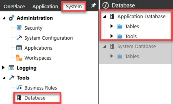
Figure 5.1
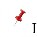
It may seem a bit counterintuitive that your application database can only be accessed from the System tab and not the Application tab, but this is because it is typically just your administrative users who will need access to view application tables. As such, access to application database tables is limited to being accessed from the System tab. Put a pin in that for now!
On the Database page (Figure 5.1), you will see that you have an Application Database. And, right below that, you have a System Database, which we will touch upon in detail in the next chapter.
These two databases contain all the tables necessary to support your application and system security. If you were to log out of a particular application, (e.g., OneStream Production application), and log into another application within the same environment, (e.g., OneStream Development), you will notice on this Database page that the Application Database tables pertain only to the application where you are logged in. In turn, the System Database tables remain constant.
This speaks to what we touched upon in Chapter 2; your framework database, aka the system database, applies to an entire environment. There is only one framework database per environment. However, application databases are one-for-one per application within an environment. Thus, to view application-specific tables, you must log into the application whose tables you want to view, even though you access them from the System tab.
Again, in this chapter, we are going to focus on the application security layer and thus be talking about all the elements that reside within the application database tables. In Chapter 6, we will go into the system database (aka framework) tables in detail.
Application Security
Application Roles & Pages
In the last chapter, we touched upon some out-of-the-box application security roles and application pages (application user interface roles) that exist in every customer environment. Let’s review all of these in detail. These can be found on the Application
> Tools > Security Roles page, as seen in Figure 5.2. There are 35 out-of-the-box application security roles and 25 application user interface roles.
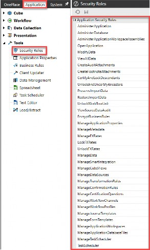
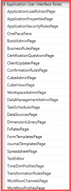
Figure 5.2
Application Security › Application Roles & Pages
Application Security Roles
What are application security roles? They are standard (aka out-of-the-box) roles that exist in every customer application, and they allow you to manage different aspects of a OneStream application. The word “manage” can mean a lot of things. In terms of OneStream application security, it signifies the ability to do something within an application. It answers the question, “Can I do X?”
When granted, some of these roles will require additional security to do “X”. Recall our example from Chapter 4, where we set up a security role to modify data (001_APP_MODIFYDATA). As we learned in Chapter 4, in addition to this role, a user will still need write access to an entity and scenario as well as cube and workflow access to be able to modify data.
However, there are some application roles that, when granted, supersede the need for additional security. Recall again the View All Data (001_APP_VIEWALLDATA) role covered in the previous chapter, which supersedes the need for specific entity scenario, cube, or workflow security.
Y
The tables below go over the functionality of each of these 35 application security roles and point out which ones supersede the need for additional security versus which ones are prerequisites to do something but still require additional security to complete their functionality.
| Application Security Role | Description | Pre-requisites / + Additions |
|---|---|---|
Administer Application 001_APP_ADMIN_DEV | Allows a user to administer a particular application. This is useful when multiple applications exist in one environment and different groups of users need to administer separate applications. There are limitations to this local admin role. This role cannot change any application security roles or application user interface roles, nor get to the System tab. our application database and error logs can only be accessed from the System tab. Therefore, if you do have local admins to whom you grant the Administer Application role, to allow them access to other admin functions, you may want to add the security shown to the right. | + 001_SYS_SYSPANE + 001_SYS_VIEWERRORLOG + 001_SYS_VIEWTASKLOG + 001_SYS_DBPAGE + 001_SYS_ERRORLOGPAGE + 001_SYS_TASKLOGPAGE |
Administer Database Nobody | This application-level role is intended for a few people who are allowed to mass-delete metadata and data, primarily using the database page. This role type is unlike most other role types because administrators are not automatically given access to operations that require this role. | + 001_APP_ADMIN_DEV + 001_SYS_SYSPANE + 001_SYS_DBPAGE Nobody supersedes Administrators |
| Application Security Role | Description | Pre-requisites / + Additions |
|---|---|---|
Administer Application Workspace Assemblies 001_APP_WSADMIN | This allows the user to edit any assemblies. This applies to all dashboard groups within the generic default Workspace and all non-default Workspaces. Maintenance Unit security determines access. | + 001_APP_WSPAGE + 008_DMU_X_M |
Analytics Api Nobody | Allows a user to access OneStream connectors to pull data into external systems. The role becomes available when access to Power BI is granted. | Access to Power BI connector |
Open Application 001_APP_OPENPROD | Allows a user to see and open various applications. | N/A |
Modify Data 001_APP_MODIFYDATA | Allows a user to modify data. The user is basically a read-only user throughout this application if he/she does not have this role. However, users in this group will still need cube, entity, and scenario modify rights to edit data. | + 002_CUBE_ + 003_SCN_X_WRITE + 004_ENT_X_WRITE + 005_WF_X_A/E |
View All Data 001_APP_VIEWALLDATA | Allows a group of users to view all data in the application. Supersedes all other metadata (cube, entity, and scenario) access. | N/A |
Create Audit Attachments 001_APP_AUDITATTACH | Allows a user to create audit data attachments for supporting documentation. 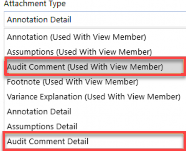 | + 002_CUBE_ + 003_SCN_X_READ/WRITE + 004_ENT_X_READ/WRITE + 008_CV_ |
| Application Security Role | Description | Pre-requisites / + Additions |
|---|---|---|
Create Footnote Attachments 001_APP_FNATTACH | Allows a user to create a footnote attachment for supporting documentation. 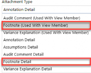 | + 002_CUBE_ + 003_SCN_X_READ/WRITE + 004_ENT_X_READ/WRITE + 008_CV_ |
Certify and Lock Descendants 001_APP_CERTIFYLOCK | Allows a user to certify and lock descendants from the workflow. Users will need to execute and certify the appropriate workflow. | + 005_WF_X_A/E/C |
Unlock and UnCertify Ancestors 001_APP_UNLOCKUNCERT | Allows a user to uncertify and unlock ancestors from the workflow. Users will need to execute and certify the appropriate workflow, as well as access to certify and lock. | + 005_WF_X_A/E/C + 001_APP_UNLOCKWF + 001_APP_CERTIFYLOCK |
Preserve Import Data 001_APP_PRESERVEDATA | Allows a user to preserve data if changes need to be made. A user will lock the workflows and then preserve imported data when changes need to be made. The workflow can then be unlocked so changes can be made. | + 005_WF_X_A/E + 003_SCN_X_READ/WRITE |
Restore Import Data 001_APP_RESTOREDATA | Allows a user to restore imported data to the original state. The workflow will need to be unlocked so data can be restored. | + 005_WF_X_A/E + 003_SCN_X_READ/WRITE |
Unlock Workflow Unit 001_APP_UNLOCKWF | Allows a user to unlock or lock a particular Workflow Unit. | + 005_WF_X_A/E |
| View Source Data Audit | This is a legacy security role and is under review for relevance to future platform versions. | N/A |
Encrypt Business Rules Nobody | Allows a user to encrypt and decrypt a rule from the business rule screen on the Application tab, if the user is in the role. | Nobody supersedes Administrators |
Manage Application Properties 001_APP_MNG_APPPROP | Allows a user to update this application’s properties. | + 001_APP_APPPROPPAGE |
Manage Metadata 001_APP_MNG_METADATA | Allows a user to edit all metadata under the dimension library for this application. Supersedes all other dimension access. To restrict a person to only edit specific metadata dimensions, you cannot use this role and must individually provision dimensions. | + 001_APP_DIMPAGE |
| Application Security Role | Description | Pre-requisites / + Additions |
|---|---|---|
Manage FX Rates 001_APP_MNG_FXRATES | Allows a user to update FX rates. | + 001_APP_FXPAGE |
Lock FX Rates 001_APP_LOCKFX | Allows a user to lock FX rates. | + 001_APP_FXPAGE |
Unlock FX Rates 001_APP_UNLOCKFX | Allows a user to unlock FX rates. | + 001_APP_FXPAGE |
Manage Data 001_APP_MNG_DATA | Allows a user to manage data in all aspects, including but not limited to exporting data and clearing data completed through data management. Supersedes all other data management access. To restrict a person to only edit specific data management units, you cannot use this role and must individually provision data management units. | + 001_APP_DMPAGE |
| Manage Smart Integration | This is a future security role and is under review for relevance to future platform versions. | N/A |
Manage Cube Views 001_APP_MNG_CUBEVIEWS | Allows a user to create new Cube Views and manage Cube View groups and profiles. Supersedes Cube View group access but does not supersede Cube View Profile access. To manage Cube View Profiles, a user will need maintenance rights to the profile(s). | + 001_APP_CVPAGE + 002_CUBE_ + 008_CV_ |
Manage Data Sources 001_APP_MNG_DATASOURCES | Allows a user to create new data sources, which can subsequently be used to import data via a workflow import profile. | + 001_APP_DSPAGE + 002_CUBE_ |
Manage Transformation Rules 001_APP_MNG_MAPPING | Allows a user to create new transformation rules and manage transformation rules groups and profiles. Supersedes transformation rule group and profile maintenance access. | + 001_APP_MAPPINGPAGE + 002_CUBE_ |
Manage Confirmation Rules 001_APP_MNG_CONFIRM | Allows a user to create new confirmation rules and manage confirmation rules groups and profiles. Supersedes confirmation rule group and profile maintenance access. | + 001_APP_CONFIRMPAGE + 002_CUBE_ |
Manage Certification Questions 001_APP_MNG_CERT | Allows a user to create new certification questions and manage certification question groups and profiles. Supersedes certification rule group and profile maintenance access. | + 001_APP_CERTPAGE + 002_CUBE_ |
Manage Workflow Channels 001_APP_MNG_WFCHANNELS | Allows users to create new workflow channels. | + 001_APP_WFCHANPAGE |
Manage Workflow Profiles 001_APP_MNG_WFPROFILES | Allows a user to create new Workflow Profiles. Supersedes Workflow Profile maintenance access. | + 001_APP_WFPROFILEPAGE + 002_CUBE_ |
| Application Security Role | Description | Pre-requisites / + Additions |
|---|---|---|
Manage Journal Templates 001_APP_MNG_JOURNALS | Allows a user to create new journal templates and manage journal groups and profiles. Supersedes journal template group and profile maintenance access. | + 001_APP_JOURNALPAGE + 002_CUBE_ |
Manage Form Templates 001_APP_MNG_FORMS | Allows a user to create new form templates and manage forms groups and profiles. Supersedes form template group and profile maintenance access. | + 001_APP_FORMPAGE + 002_CUBE_ |
Manage Application Workspaces 001_APP_MNG_WSAPP | Allows a user to create new application dashboards and manage dashboard groups and profiles. Supersedes Dashboard profile access but does not supersede dashboard group access. To manage dashboard groups, a user will need maintenance rights to the group(s). | + 001_APP_WSPAGE + 008_DMU_X_M |
Manage Application Database Files 001_APP_MNG_FILES | By default, a user has full access to his/her user folders and files in the application file explorer. This role supersedes all access, allowing users read and write access to all public folders and files. | N/A |
Manage Task Scheduler 001_APP_MNG_TASKSCH | Allows a user to view, create, edit, delete, enable or disable all tasks. | + 001_APP_TASKSCHPAGE |
Task Scheduler 001_APP_TASKSCHEDULER | Allows a user to view, create, edit, delete, enable or disable their own tasks. You can view all user tasks, but only edit your own. | + 001_APP_TASKSCHPAGE |
Figure 5.3
The above table demonstrates that you have a lot of flexibility with out-of-the-box security roles, allowing you to determine what your users can do within an application. These application security roles form a starting point to allow you to put guardrails around your users. Next, let’s talk about the roles that will determine where a person can navigate in OneStream.
Application Security › Application Roles & Pages
Application User Interface Roles
I like to think of application user interface roles simply as application pages. While application security roles answer “Can I do X?”, application user interface roles answer “Can I get to X?”
You may want to allow some users to view X, but you do not want to allow them to manage X. So while application roles and application pages can go hand-in-hand (meaning that if a person can do X, they will also need to get to X) they can also be separate in the case of allowing a user to view but not manage X.
Therefore, as mentioned in Chapter 3, when applying security to both application security roles and application pages (001_APP), you will want to use distinct groups for each so that you can separate the viewer from the doer.
Having said that, application user interface roles are very straightforward and literally mean exactly what they say. Simply put, they will allow certain users to reach that page within OneStream. They are starting to form the basis of what paths you illuminate with street signs (thinking back to our neighborhood analogy) to point your users in the right direction.
There is no need to overcomplicate application pages. You want to ask yourself, “Do I want certain users, everyone, or only administrators to get to these pages?” If the answer is everyone or only administrators, then you can use the native security groups of Everyone or Administrators on these pages.
Suppose you want to grant certain pages to subsets of users. In that case, you will set up corresponding security groups (001_APP_XPAGE), assign the groups to those pages, and then nest these group(s) into your various user groups (000_GRP).
Not granting users the ability to get to certain pages is the primary method of putting fences around items in OneStream, and limiting your end-user from feeling overwhelmed. Remember, security can be used to control the overall end-user experience in addition to protecting your application.
For example, if a user only needs to view Cube Views but will never need to maintain Cube Views, there is no need to grant the user access to the Cube Views page. Your user will access Cube View reports through OnePlace, workflows, dashboards, or perhaps even Excel. There is no need to grant that user access to the Cube Views page, as that will only serve to confuse your end-user. We will revisit this in the Reporting Security section of this chapter.
Once a user has access to reach a page, then additional layers of object security, introduced in Chapter 3 and discussed in more detail later in this chapter, will apply which will determine what the person can see or do once they get to that page. Figure
5.4 lists all application user interface roles and what access they will grant.
| Application User Interface Role | Description of Access |
|---|---|
Application Load Extract Page Administrators | Allows access to the application load/extract screen. 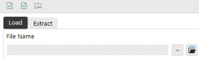 |
Application Properties Page 001_APP_APPPROPPAGE | Allows access to the application properties screen where global time and scenario, currencies, standard formats, company logos, workflow channels, etc., can be edited. 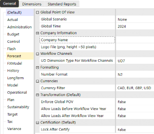 |
Application Security Roles Page Administrators | Allows access to the application security screen, where all security roles for an application can be edited. 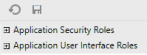 |
OnePlace Pane Everyone | This tab is the starting point for all users in OneStream. It allows users to navigate to the workflows, Cube Views, dashboards, and documents to which they have access. 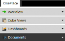 |
Book Admin Page 001_APP_BOOKPAGE | Allows access to the Book Designer screen. 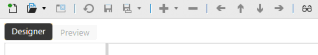 |
Business Rules Page 001_APP_BRPAGE | Allows access to the business rules screen. 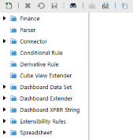 |
Certification Questions Page 001_APP_CERTPAGE | Allows access to the certification questions. 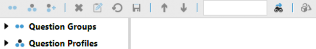 |
Client Updater Page Administrators | Allows access to the screen that determines if a user’s OneStream Excel Addin is up to date. 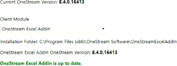 |
Confirmation Rules Page 001_APP_CONFIRMPAGE | Allows access to the confirmation rules screen. 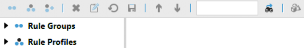 |
Cube Admin Page 001_APP_CUBEPAGE | Allows access to the cube admin screen. 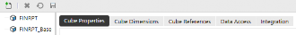 |
Cube Views Page 001_APP_CVPAGE | Allows access to the Cube Views screen. 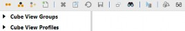 |
Workspace Admin Page 001_APP_WSPAGE | Allows access to the dashboard Workspace admin screen. 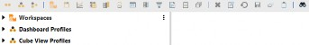 |
Data Management Admin Page 001_APP_DMPAGE | Allows access to the data management admin screen. 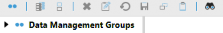 |
Task Scheduler Page 001_APP_TASKSCHPAGE | Allows access to the task scheduler screen. 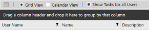 |
Data Sources Page 001_APP_DSPAGE | Allows access to the data sources screen. 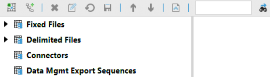 |
Dimension Library Page 001_APP_DIMPAGE | Allows access to the dimension library screen. 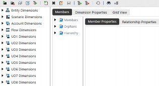 |
FX Rates Page 001_APP_FXPAGE | Allows access to the FX rates screen. 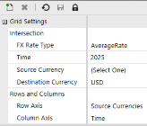 |
Form Templates Page 001_APP_FORMPAGE | Allows access to the form templates screen. 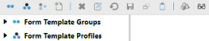 |
Journal Templates Page 001_APP_JOURNALPAGE | Allows access to the journal templates screen. 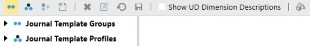 |
Spreadsheet Page 001_APP_SPREADSHEETPAGE | Allows access to the Spreadsheet screen inside a OneStream application. 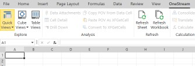 |
Text Editor Page Administrators | Allows access to the text editor screen, which is used to create, edit, and view text documents like those created in Microsoft Word. 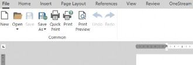 |
Time Dim Profiles Page 001_APP_TIMEPROFILEPAGE | Allows access to the time profiles and calendars within an application. For example, this is where the short and long descriptions for a time period can be updated. 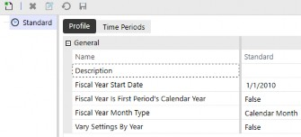 |
Transformation Rules Page 001_APP_MAPPINGPAGE | Allows access to the transformation rules screen. 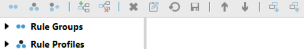 |
Workflow Channels Page 001_APP_WFCHANPAGE | Allows access to the workflow channels screen. 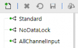 |
Workflow Profiles Page 001_APP_WFPROFILEPAGE | Allows access to the Workflow Profiles screen. 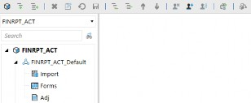 |
Figure 5.4
A common theme with application user interface roles is that they allow a user to get to a specific application page; however, other security access will determine what that user can see and do once on that page. For example, a user may have access to the Cube Views page (001_APP_CVPAGE), but the user will only have view or modify access to Cube View groups and profiles on that page as determined by those additional security groups (e.g., 008_CV_A/M). This is shown in Figure 5.5.
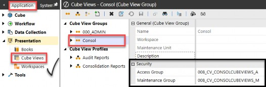
Figure 5.5
As mentioned previously, of the 35 application security roles, two-thirds (20) of them require additional page access via a corresponding application user interface role.
This means if a person can do X, they will naturally also need to be able to navigate to X.
The last item worth noting is the naming convention we established in Chapter 3. All application roles start with 001_APP, as this is the first layer of security once you are logged into an application.
To bring all these out-of-the-box roles together, Figure 5.6 shows the correlation between application security roles (doer) and application user interface roles (viewer).
| Application Security Role | + | Application User Interface Role |
|---|---|---|
Administer Database 001_APP_DBADMIN | + | Database Page 001_SYS_SYSPANE |
Administer Application Workspace Assemblies 001_APP_WSADMIN | + | Workspace Admin Page 001_APP_WSPAGE |
Manage Application Properties 001_APP_MNG_APPPROP | + | Application Properties Page 001_APP_APPPROPPAGE |
Manage Metadata 001_APP_MNG_METADATA | + | Dimension Library Page 001_APP_DIMPAGE |
Manage FX Rates 001_APP_MNG_FXRATES | ||
Lock FX Rates 001_APP_LOCKFX | + | FX Rates Page 001_APP_FXPAGE |
Unlock FX Rates 001_APP_UNLOCKFX | ||
Manage Data 001_APP_MNG_DATA | + | Data Management Admin Page 001_APP_DMPAGE |
Manage Cube Views 001_APP_MNG_CUBEVIEWS | + | Cube Views Page 001_APP_CVPAGE |
Manage Data Sources 001_APP_MNG_DATASOURCES | + | Data Sources Page 001_APP_DSPAGE |
Manage Transformation Rules 001_APP_MNG_MAPPING | + | Transformation Rules Page 001_APP_MAPPINGPAGE |
Manage Confirmation Rules 001_APP_MNG_CONFIRM | + | Confirmation Rules Page 001_APP_CONFIRMPAGE |
Manage Certification Questions 001_APP_MNG_CERT | + | Certification Questions Page 001_APP_CERTPAGE |
Manage Workflow Channels 001_APP_MNG_WFCHANNELS | + | Workflow Channels Page 001_APP_WFCHANPAGE |
Manage Workflow Profiles 001_APP_MNG_WFPROFILES | + | Workflow Profiles Page 001_APP_WFPROFILEPAGE |
Manage Journal Templates 001_APP_MNG_JOURNALS | + | Journal Templates Page 001_APP_JOURNALPAGE |
Manage Form Templates 001_APP_MNG_FORMS | + | Form Templates Page 001_APP_FORMPAGE |
Manage Application Workspaces 001_APP_MNG_WSAPP | + | Workspace Admin Page 001_APP_WSPAGE |
Manage Task Scheduler 001_APP_MNG_TASKSCH | + | Task Scheduler Page |
Task Scheduler 001_APP_TASKSCHEDULER | 001_APP_TASKSCHPAGE |
Figure 5.6
Now that we have discussed the out-of-the-box application security roles and pages, let’s move on to the myriad of objects within an application that can be secured.
Application Security
Application Objects
After granting application security roles and application user interface roles (001_APP), the next step is to determine how to secure the hundreds of objects that appear within a OneStream application. And when I say hundreds, that is no joke!
Thinking again about securing a home, application security roles and application user interface roles are like securing the windows and doors. They are the first point of entry to a specific application, after being allowed into the community (aka the environment layer).
If application roles are the windows and doors, then application objects are all the items found inside a home. As you can imagine, there are hundreds, if not thousands, of individual objects inside one’s home!
A OneStream application will have its own set of objects whose numbers are infinitely scalable depending on each company’s needs.
Because application objects can be limitless, I like to group them into 13 categories. These 13 categories are not standard OneStream groupings, merely a way to organize objects into more manageable pieces:
Metadata (cubes, dimensions, entities, accounts, flow, UD1-8)
Business Rules
Certifications (groups and profiles)
Confirmations (groups and profiles)
Cube Views (groups and profiles)
Workspaces / Dashboards (maintenance units and profiles)
Data Management (groups)
Data Sources
Explorer (files and folders)
Forms (groups and profiles)
Journals (groups and profiles)
Transformations (groups and profiles)
Workflows (profiles)
Within each of these 13 categories, you can have a limitless number of individual objects. For example, your application may have multiple Cube View groups and Cube View Profiles. Each of those can be individually secured if needed.
Or, if you are taking a simple approach to security, you can only secure access to the Cube Views page and thus leave all individual Cube View groups and profiles open to everyone.
The other important item to remember with application object-level security is the naming convention we established in Chapter 3. Application object security groups will start with 002 to 009, which helps distinguish them from application role groups (001) discussed in the prior section.
Lastly, let’s not forget that application objects have different ways in which they can be secured, as shown in Figure 3.14 in Chapter 3.
There are two primary security groups (access and maintenance) that pertain to most application objects, and then additional groups that are specific to metadata and workflows, as shown in Figure 5.7 below.
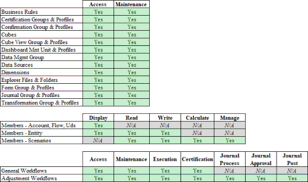
Figure 5.7
Application Security
Application Tables
So, where are all these limitless application objects stored? They are stored in the application database discussed earlier in this chapter, which is accessed from the System > Tools > Database page.
There are over 150 out-of-the-box tables in any given application. That number will grow if any Solution Exchange solutions or custom tables have been added to an application, as they will also appear on the application database page.
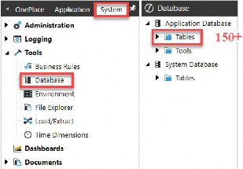
Figure 5.8
These 150+ application tables consist of tables for the following types of items:
Audit Tables
Data Tables
Application Objects Tables
Hierarchies / Relationships Tables
Property Tables
Custom or Solution Exchange Tables
The audit and the application object tables are important to understand in relation to security and application tables. The audit tables contain who did what and when within an application. The application object tables contain what security is applied to the 13 different types of application object categories that can be secured.
The remaining application tables containing data, hierarchy relationships, and properties do not contain information relevant to security. While they are the backbone of every application, and represent the data and relationships within your application, they do not – in fact – contain any security group information.
It is important to understand the application object tables that do contain security information because, if you need to write any custom reports to trace application security, you will be pulling information from these tables.
In the next section, we will focus on the audit and application object tables and delve into what is important to understand about those tables in relation to security.
Application Security › Application Tables
Object Tables
Every application table that has security groups will maintain those security groups by a unique ID rather than the security group name. Figure 5.9 shows an example of this from the CubeViewGroup table, where we can see a unique ID for the AccessGroupUniqueID and the MaintenanceGroupUniqueID.
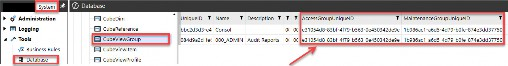
Figure 5.9
There are only three minor exceptions where application tables store the access and maintenance group as the security group name and not the unique ID.
Why is it important to understand security groups are stored by their IDs as opposed to security group names in application tables? Because, to pull back information regarding which security groups are assigned to various application objects by name – instead of unique ID – you need to join application tables with system tables using that unique ID.
This is because security groups exist in the framework database (aka system tables) by their name and ID. And to do that means querying across the application database tables and system database (e.g., framework) tables.
Figure 5.10 provides a list of all application tables that contain security groups stored as unique IDs, which when joined with the system tables, will allow a user to retrieve security group name assignments for application objects:
e
o
er
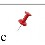 BusinessRul | 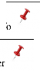 FileInf |
| CertifyGroups | Fold |
| CertifyProfiles | FormTmpItGroup |
| ConfirmGroups | FormTmpItProfile |
| ConfirmProfiles | JournalTmpItGroup |
| Cube | JournalTmpItProfile |
| CubeViewGroup | Member |
| CubeViewProfile | ParserLayouts |
| DashboardMaintUnit | StageRuleGroups |
| DashboardProfile | StageRuleProfiles |
| DataMgmtGroup | WorkflowProfileAttributes |
| DataMgmtProfile | WorkflowProfileHierarchy |
| Dim |
Figure 5.10
These tables are consistent from application to application and customer to customer; however, the records contained within those tables will be unique to each application and customer. In essence, these tables are blank until a customer starts building and maintaining their application. So, while the table structure is identical from application to application, the members or records existing within these tables are specific to each customer, application, and environment.
It is also worth noting that, as application elements are added during build and new records created in these tables, unless security is assigned to the object, a default security group ID for the Everyone group (which is e31054d8-83bf-4f79-b563-0e450342de9e) will be assigned as the Access and Maintenance group IDs.
Application Security › Application Tables
Audit Tables
While security groups are only stored in the application tables as unique IDs, the same is not true for users within the audit tables. Approximately 75 application audit tables store ‘who did what when’ within an application by the user name, as opposed to a unique ID.
Why is this relevant? This makes querying and presenting reports displaying audit actions inside OneStream easier than presenting a report that shows what security group is attached to which application object. This is because you do not need to query across the application database tables and system database (e.g., framework) tables. All audit tables are self-contained within the application database only.
Because the audit tables store ‘who did what when’ by the user name (e.g., audit user column in the application audit tables) as opposed to a unique user ID, there is no need to join tables across databases. An example of this is shown in Figure 5.11, where the AuditAppProperty table is displayed with the user name presented in the AuditUser column.

Figure 5.11
This also explains why – in the Solution Exchange Standard Application Reports (RPTA) tool – there are several audit reports that will allow you to see user names, as shown in Figure 5.12.
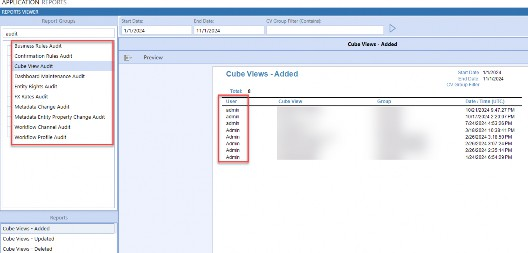
Figure 5.12
There is a consequence of audit tables storing the user name as opposed to the unique ID. This was discussed in Chapter 2 when we talked about deleting versus disabling a user. If you delete a user, that user name is available to be used again.
And because the audit tables store who did what by user name (and not a unique ID), that means you can set up a user with the same name as before, and it will appear as if that new user took action in the audit tables which – in fact – could have been actions taken by the previous, not current, user.
We will touch upon this again in Chapter 8 when we talk about the security audit reports and how you can use all reports together to properly audit user actions.
Now that we have covered the list of 13 distinct categories of application objects that can be secured, the ways in which you can secure those objects (Figure 5.7), and the tables where such security resides (Figure 5.10), let us now delve into some key OneStream application security elements.
Application Security
Entity Security
When people think about securing their data, the Entity dimension is one of the first things that comes to mind. The Entity dimension is an integral part of every OneStream application and directly impacts reporting, performance, data loading, and many other elements of your application. When it comes to security, though, I find securing the Entity dimension to be straightforward.
Most companies know who should have read or write access to various entities. Some companies may go quite granular and create read and write entity security groups for each individual base-level entity (e.g., 004_ENT_DE_WRITE). Other companies may choose to secure data at a higher level, like a group of entities such as a region (004_ENT_EMEA_READ) or cost center (004_ENT_GENADMIN_READ) grouping.
Companies taking a simpler approach may choose to leave all entities as read access to Everyone and only grant write access to Administrators.
As with all OneStream security, you can go as simple or granular as you wish, and the Entity dimension is no exception. Figure 5.13 shows the many ways in which you can secure your Entity dimension.
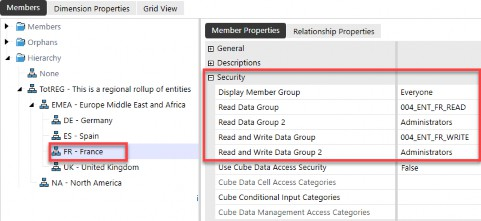
Figure 5.13
In the example above showing entity security, the below is true:
| Entity Security | Description |
|---|---|
Display Member Group Everyone | Controls who can see that the entity exists, but does not allow a person to see the entity’s data. Typically, you will leave this as Everyone. |
Read Data Group 004_ENT_FR_READ | Allows a person to see data for this entity. |
Read Data Group 2 Administrators | A second group that can see data for this entity. If using nesting (e.g., 004_ENT_EMEA_READ has rights over 004_ENT_FR_READ), this can be set to Administrators. If you are not nesting entity security groups, then you could set this second group to 004_ENT_EMEA_READ. |
Read and Write Data Group 004_ENT_FR_WRITE | Allows a person to see and modify data for this entity. |
Read and Write Data Group 2 ADMINISTRATORS | A second group that can see data for this entity. If using nesting (e.g., 004_ENT_EMEA_WRITE has rights over 004_ENT_FR_WRITE), this can be set to Administrators. If you are not nesting security groups, then you could set this second group to 004_ENT_EMEA_WRITE. |
Figure 5.14
Even though securing the Entity dimension is straightforward, there are a few items I want to highlight.
First, the remaining security applied at the Entity dimension level is shown in Figure
5.15. The Use Cube Data Access Security toggle of True or False pertains to Data Cell Access (aka slice) security and will be covered in Chapter 7. But understand that the determination as to whether to use additional slice security – which is set up on the cube admin page – starts with the Entity dimension by toggling this to True and is a setting on each individual entity, as shown in Figure 5.15.
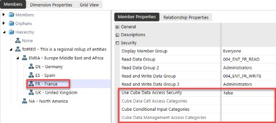
Figure 5.15
Application Security › Entity Security
Relationship Security
Next, there is another element of OneStream security that is determined at the cube level and involves the intersection of the Entity (E#) and Consolidation (C#) dimensions. The Use Parent Security for Relationship Consolidation Members security setting is a toggle of True or False, set at the cube level, as shown in Figure 5.16.
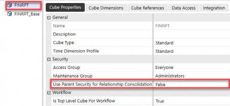
Figure 5.16
If set to False, the user’s entity rights control their rights to all members of the Consolidation dimension (C#Top). This is the default security model and allows users to see their entity and all the relationship members in the C# dimension.
If set to True, the user’s rights to the relationship members of the Consolidation dimension (C#OwnerPostAdj, C#Elimination, C#Share, C#OwnerPreAdj) are determined by their rights to the entity’s immediate parent. If a user does not have rights to the immediate parent, they will not be able to see the relationship C# members. They will only be able to see their entity for the consolidation members C#Local and C#Translated.
This is shown in Figure 5.17.
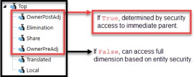
Figure 5.17
It is important to note that although setting to True means a person cannot see the C#Elimination member, this will not impact that person’s ability to reconcile intercompany out-of-balances. There is a built-in exception that will allow a user to see intercompany data of their trading partners, even when this is set to True.
Figure 5.18 shows how the data appears with this cube setting as False versus True from the perspective of a Montreal user. If set to False, the Montreal user will see all C# members, as shown at the top of Figure 5.18. If, however, this is set to True, the Montreal user will only see C#Local and C#Translated for Montreal and get No Access for other consolidation members.
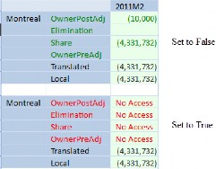
Figure 5.18
The clearest use case for setting the Use Parent Security for Relationship Consolidation Members to True at the cube level is when you want to prevent a user from seeing any topside adjustments (C#OwnerPostAdj) that may be posted by a corporate function to their entity.
For example, corporate users may post topside adjustments related to restructuring or some other activity. While those journals may be posted to a base entity, they are posted as topside adjustments to a specific parent and child combination. So, while a person may have access to a particular base entity, you may want to restrict them from seeing these topside adjustments.
Another less common use case would be wanting to restrict a user from seeing the C#Share member (another consolidation relationship member), which would allow them to know who owned them and by what percentage of ownership, since those entries post to C#Share in the Consolidation dimension of a base entity.
Again, the default is set to False, which is the most common application. But there can be a handful of rare exceptions as to why your company may want to set this to True at the cube level, so understanding this setting is relevant to entity security.
Application Security
Scenario Security
When thinking about securing your OneStream data, the next element that may come to mind is allowing people to view (or not) specific data scenarios. For example, you may want to restrict who can see a long-range Plan scenario or a Forecast scenario versus controlling who can enter Actual data versus Budget data. This is scenario security.
Scenario security consists of Read Data Group, Read and Write Data Group, Calculate from Grids Group, and Manage Data Group security access. The first three, as shown in Figure 5.19, behave much as you would expect. Like entity security, I find scenario security uncomplicated.
However, the Manage Data Group security access is worth calling out as it can impact a user’s ability to take certain actions within that scenario.
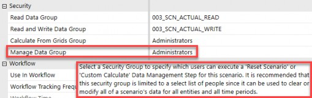
Figure 5.19
A user must be in a security group that is assigned (or inherits rights) to Manage Data Group to take two actions:
Run a scenario reset from a data management step
Run a custom calculation from a data management step
| One exception for users in the native Administrators group is that to run scenario resets or custom calculations on specific scenarios, those users must also be added to the security group assigned to the Manage Data Group. |
This is true even for users in the native Administrators group. In Chapter 2, we noted that users in the native administrators security group did not need any additional security because administrators have full access to do everything. But we noted there are two exceptions.
Another thing about the Manage Data Group security assignment on a scenario is that it supersedes the other three security group assignments on a scenario: Read Data Group, Read and Write Data Group, and Calculate from Grids Group. By this, I mean a person who is in the Manage Data Group does not need the Read and Write Data Group access to run a scenario reset or custom calculate.
Nor do they need write access to an entity, the application security role to modify data, or any other write data access security. By being in the Manage Data Group alone, a user will be able to perform those two actions on a specific scenario.
This is an exception to security group access, but it is intentional. Since the actions of resetting a scenario or running a custom calculation against a scenario are very narrow and purposeful, it stands to reason that the security allowing a person to do those things is also deliberate and purposeful.
A scenario reset should be used with extreme caution and is rarely used within live applications. It can be used early on during project development cycles to clear all data (cube and Stage) for all time periods for a given scenario. As such, it should be restricted to a very limited number of users.
Custom calculations can be used frequently, especially for Budget and Forecast scenarios. Custom calculations can be used to seed Actual data into a Forecast scenario, run Budget-specific driver-based calculations, and many other calculations that are run on-demand and which are not a part of the standard business rules attached to the cube or as a part of a Data Unit Calculation Sequence (DUCS).
This is important to note because you will want to create a security group specific to each scenario to allow certain users to run custom calculations. The error message that will appear if a user has not been granted Manage Data Group access is shown in Figure 5.20.
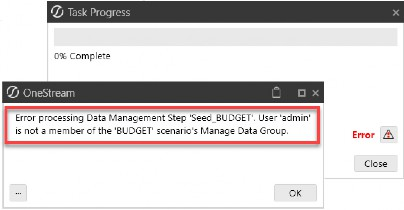
Figure 5.20
Application Security
Account, Flow & User Defined Security
The last data object to talk about potentially securing is your Account, Flow, and/or User Defined dimensions. As we all know, in a OneStream application you can have up to eight User Defined dimensions, and Flow and Account dimension(s) that can be extended and used in a multitude of different ways across cubes and Scenario Types.
Account, Flow and all User Defined dimensions have one security group associated with them: a Display Member Group.

Figure 5.21
That’s it, one security option for Account, Flow and all User Defined dimensions! Sounds easy, right?
There are a couple of things to keep in mind when securing accounts, flows, and UDs. If a company is taking a simple approach to security and does not need to secure individual UDs or Accounts, it may be good enough to leave the Display Member Group as Everyone and stop there.
If you can take that approach, that is fantastic. This means if a person has access to a cube, entity and scenario, they will see all data associated with that Data Unit.
But if you need to deviate from this simple approach, there are two options with accounts, flows, and UDs:
Use slice security (Chapter 7)
The Display Member Group
We will get into slice security in a subsequent chapter but just understand that if you need to further limit who can see cube data in particular accounts or UDs – because these dimensions go beyond the Data Unit – you will do so by applying slice security.
But let’s discuss how you may leverage the Display Member Group to your advantage, if needed. Quite often, User Defined dimensions can have a large number of items. And when running reports with prompts or perhaps using forms for data entry in a Budget or Forecast process, you may present your users with a list of these items from which to pick (aka a OneStream parameter).
For example, if you have a User Defined dimension that represents a customer and has thousands of members in that dimension, you can imagine how a person running a report or entering their sales forecast may be overwhelmed if they are presented with a parameter that includes those thousands of members.
Display Member Group security can, therefore, be leveraged to limit the choices people see in a pick list, for example. This security on accounts, flows, and UDs does not limit a person from that data rollup through those dimensions. The Account, Flow, and User Defined dimensions aggregate on the fly, so even if you cannot see a particular base member, you can still see how that base member aggregates data.
The Display Member Group only limits the member’s visibility, but does not limit a user from seeing the data in that member. For example, if a user cannot see a member called U7#DiscOps in a pick list or in the hierarchy, but they type that member name into a Spreadsheet, the user will be able to retrieve that member’s data. If you need to control visibility to that data, then slice security (Chapter 7) will need to be employed.
But, when you run a Cube View or enter data into a form, it will not appear in any parameters if you do not have display member group access to a particular Account, Flow, or UD. The most common use case is to leave the Display Member Group on Accounts, Flow, and User Defined dimensions as Everyone. But, just understand that you can add a layer of security to these dimensions if needed, without having to use slice security.
Application Security
Workflow Security
Workflows are the backbone of how users interact with OneStream and are key to guiding users in their processes within an application. As such, workflow setup and the application of workflow security are central to the overall end-user experience. We have already touched upon workflow access in this chapter and prior chapters, but let’s review this more closely since this is a fundamental OneStream feature.
Workflows have many layers and places where you will have the opportunity to introduce different components of the application. As we will talk about in the next section of this chapter, both Cube Views and dashboards can be presented to users via a workflow. Additional processes, such as importing data, posting journal adjustments, confirmations, certifications, and intercompany matching, are also handled via various workflows.
Most of these processes and components can be secured individually; however, it is strongly recommended that you understand how they all work together before you start creating and applying security to each of them.
Over-securing areas in the workflow can create a web that is sometimes hard to follow and, most times, cumbersome and unnecessary. If the workflow design considers how users access applicable processes, then security should be applied when required and restricted if not needed.
Likewise, under-securing areas in the workflow can lead to end-user confusion, recalling the analogy of entering a community with no street names or house numbers. You can easily get lost as you try to navigate. Workflows can be equally confusing for end-users to navigate if you leave security wide open (aka everyone).
Having the right balance of allowing access when needed, and removing access when not necessary, is a balancing act between ease of maintenance and end-user experience.
Let’s start by touching upon the first workflows that are set up within an application as you begin building and implementing OneStream.
Application Security › Workflow Security
Cube Root & Default Profiles
Workflows are tied to the top-level cube defined for a workflow (therefore, workflows are divided by cube) but are also further divided by workflow suffixes used on a cube, as shown in Figure 5.22.
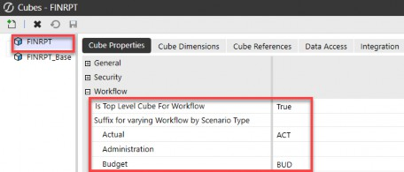
Figure 5.22
This is important to understand from a security perspective because this means you will be able to apply different security not only by cube but also by Scenario Type suffixes, if desired.
The cube root Workflow Profile is always named CubeName_ ScenarioTypeSuffix, as shown below in Figure 5.23 (FINRPT_ACT).
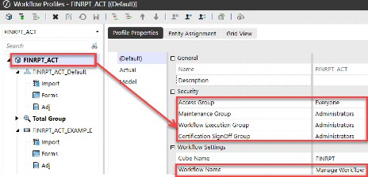
Figure 5.23
This cube root Workflow Profile is the Manage Workflow dashboard presented when a user navigates to this on the OnePlace tab, as shown in Figure 5.24. This is the dashboard that allows a company to close workflows. Why is this important? Because you almost never want to hit the Close Workflow button!
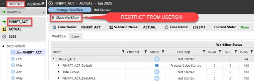
Figure 5.24
To restrict your users from inadvertently closing workflows, one of the first security settings you will want to make within your application is to change the Maintenance Group, Workflow Execution Group, and Certification Sign Off Group access to Administrators on this cube root Workflow Profile (FINPRT_ACT) as shown next.
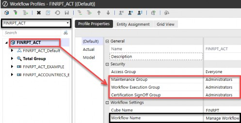
Figure 5.25
You must leave the Access Group open to Everyone because workflows are hierarchical, and for a user to navigate to their processes for this cube and scenario, they will need to at least view the cube root Workflow Profile. But by restricting the other security groups on this cube root profile, you will prevent a user from hitting the Close Workflow button in Figure 5.24.
Take, for example, a person who needs to have access to the workflow CORP.Import shown in Figure 5.26 below. That user will need to have access (not maintenance, execute, or certify) to the cube root Workflow Profile of FINRPT_ACT in order to be able to navigate to the CORP.Import profile being used to load data. In this case, we can see the access has been set to Everyone on the cube root.
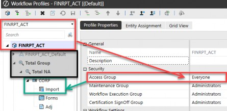
Figure 5.26
The user will not need access to the full navigation path (aka all ancestors) above: CORP.Import (e.g., they will not need Total NA and Total Group access). Just having access to the cube root Workflow Profile will allow a user to navigate through any ancestors to reach the Workflow Profile to which they have been granted access.
If the cube root Workflow Profile (e.g., FINRPT_ACT) has been restricted to an access group to which a user does not have access, they will not be able to navigate to CORP.Import to which they have been granted access, as shown in Figure 5.27.
Figure 5.27
| As a rule of thumb, any cube root Workflow Profiles will need to have the Access Group set to Everyone. This is to allow users to navigate to any other workflows to which they have been granted access. You will want to ensure the cube root Workflow Profiles Maintenance Group, Workflow Execution Group, and Certification Sign Off Group are set to Administrators so that a user cannot close a workflow inadvertently! |
FINRPT_ACT is not in their pick list, so they cannot navigate the rest of the cube root workflow hierarchy to get to the workflow to which they have been granted access. This only applies to the cube root Workflow Profile, and not all other intermediate parents or ancestors in the rest of the workflow hierarchy.
Now that we have talked about the basic security assigned to the cube root Workflow Profile let’s next review the default Workflow Profile that is also created for every cube and Scenario Type named CubeName_ScenarioTypeSuffix_Default, as shown below in Figure 5.28 (FINRPT_ACT_Default).
Figure 5.28
The purpose of this default Workflow Profile is to serve as a placeholder for all other Workflow Profiles that are created and used in your application. It holds default values for things like workflow channels, unassigned entities, etc. Just like the cube root Workflow Profile serves as a starting point of navigation for all workflows relating to this cube and Scenario Type(s), so too does the default Workflow Profile.
Therefore, you will also want to leave the Access Group open to Everyone so users have a starting point in their workflow navigation. Because this workflow serves merely as a placeholder for default values, you do not want to use this Workflow Profile to load any data or run any processes within your application.
Therefore, as shown in Figure 5.28, you want to restrict the Maintenance Group, Workflow Execution Group, and Certification Sign Off Group access to Administrators. Also, I like to go the extra step – as shown in Figure 5.28 – and update the description of this default profile to DO NOT USE!, which serves as a further warning to users.
As for the default Import, Forms, and Adj child Workflow Profiles that exist under the parent default profile, you will want to make the changes as shown in Figure 5.29. Because users will not need to navigate to these default base-level workflows to perform their work, I set the Access Group, Maintenance Group, Workflow Execution Group, and Certification Sign Off Group all to Administrators once again to prevent users from seeing unnecessary items, and that they will never need to use.
Figure 5.29
Lastly, regarding the Import, Forms, and Adj child Workflow Profiles shown in Figure 5.29, I also like to update the Workflow Channel to be AllChannelInput on these three base workflows. This is a proactive measure to prevent errors if workflow channels are used within your application. Once again, I like to go the extra step and update the description of this default profile to DO NOT USE! (Figure 5.29).
Where you go from the cube root and default workflows that exist in every application for every top-level cube and Scenario Type suffix will entirely depend on your company’s needs, processes, and how you want users to interact with OneStream.
The key thing to remember with workflow security, as shown earlier (Figure 5.7), is that there are many types of security groups that you can apply to workflows. This is shown again in the following figure.
Figure 5.30
| The key to workflow security is the less-is-more approach. If a user does not need to see or access a workflow to do their role, restrict access to administrators or a limited group of users. This will prevent end-user confusion and make user navigation far simpler! |
There is no one-size-fits-all, as workflows and processes are unique to each company. You will want to adhere to naming conventions and nesting for security groups laid out in Chapter 3 as you apply security groups to your company’s workflows.
Application Security
Reporting Security
Now that we have covered entity, scenario, and workflow security, let’s get into how to secure reporting in OneStream. In Chapter 3, we talked about how the intersection of a person’s object security (a Cube View or dashboard), in addition to their data security (cube, scenario, and entity), will allow a user to see data in OneStream (Figure 3.2).
Because data and reporting are integral to every OneStream application, let’s dive a little deeper into report security.
Application Security › Reporting Security
Cube View Security
A person may have access to view a particular Cube View (008_CV_), but as we already learned, they will also need cube (002_CUBE_), scenario (003_SCN_), and entity (004_ENT_) access to view data on that Cube View.
In addition to that security, there are a handful of settings that can be applied at the individual Cube View level to further restrict what a person can do from that Cube View.
Figure 5.31
These True or False toggles at the Cube View level can further restrict a person from being able to enter data, right-click and calculate, translate, or consolidate data from a particular Cube View.
As a rule of thumb, if a Cube View is not used in a form, workflow, or dashboard, Can Modify Data and Can Calculate should be set to False. Additionally, if you want to control consolidations and translations from workflow “process” steps, Can Translate and Can Consolidate should also be set to False. |
These are important because they supersede a user’s access to modify data. For example, if you have a user who can modify data, but to do so, they run a Cube View and the Cube View itself has Can Modify Data set to False, they will not be able to enter data via that Cube View.
When setting up Cube View group, Cube View Profile, and Cube View page security, you want to think about where the user will access this report.
Typically, your end-user will not need access to the Cube View page, as that is not where they access and run reports. The only users needing access to the Cube View page are typically your native administrators or users with the Manage Cube Views security role.
If that is the case, you can take a simple approach and leave your Cube View group access open to everyone. With this approach, you are relying on the fact that users will not be able to navigate to the Cube Views page, and thus, you do not need to restrict access to your potentially hundreds of Cube View groups. This is a case of “Less is More” or “K-I-S-S” (Keep It Simple, Stupid) when it comes to applying security. And who does not love a kiss?
Your end-user will typically access Cube Views by one of these methods:
OnePlace
Dashboards
Excel
Forms
Workflow
Therefore, you will rely on the Cube View Profile security access to determine who can see what reports and from where. Figure 5.32 shows the types of visibility you can apply to Cube View Profile(s) that will determine who can see what reports.
Figure 5.32
If you want a user to access a report from the OnePlace tab, you will select OnePlace as the Visibility setting on the profile. That, in conjunction with the Access Group of that Cube View Profile, will allow a person to see those reports from the OnePlace tab.
Figure 5.33
If, however, a Cube View will be presented to the end-user via a dashboard, Excel, form, or workflow, then you will select one of those options as the Visibility setting in Figure 5.32, and thus restrict the user to navigating to that set of Cube Views by one of those other methods. Again, you are putting guardrails around your end-users, illuminating the path along which you want them to access various reports.
As an example, if a user gains access to a Cube View via a workflow, then access to the report is controlled by setting up a Cube View Profile with Visibility set to Workflow, granting access to that workflow (005_WF_CORP_A). In this way, the user will navigate to that workflow, as shown in Figure 5.34, to gain access to those reports.
Figure 5.34
| The key to Cube View (or dashboard) security is to determine how your users will interact with various reports (OnePlace, dashboards, Excel, forms, or workflow) and set up your Cube View (or dashboard) profile security accordingly. |
Application Security › Reporting Security
Dashboard Security
Like Cube Views, your end-users will also not need access to the dashboard page itself (the Workspace admin page) as that page is where dashboards are developed and maintained, but not where dashboards are consumed.
The only users needing access to the dashboard page are typically your native administrators or users with the Administer Application Workspace Assemblies or Manage Application Workspaces security roles.
Dashboards are typically presented to end-users in one of two ways:
OnePlace
Workflow
Therefore, you will rely on Dashboard Profile security access to determine who can see what dashboards and from where. Figure 5.35 shows the types of Visibility you can apply to dashboard profiles, determining who can see what dashboards.
Figure 5.35
If you want a user to access a dashboard from the OnePlace tab, you will select OnePlace as the Visibility setting on the profile. That, in conjunction with the Access Group of that dashboard profile, will allow a person to see those dashboards from the OnePlace tab as shown in Figure 5.36.
Figure 5.36
If, however, a dashboard will be presented to the end-user via a workflow, then you will select that option as the Visibility setting, restricting the user to only navigating to that dashboard via a workflow.
As an example, if a user gains access to a dashboard via a workflow, then access to the dashboard is controlled by setting up a dashboard profile where Visibility is set to Workflow, granting access to that workflow (005_WF_PLP_A). In this way, the user will navigate to that workflow – as per the bottom of Figure 5.37 – to gain access to that dashboard.
| As a rule of thumb, users will not need access to the Cube View page or Workspace admin page because you will typically grant access to reports and dashboards via other methods. |
Figure 5.37
Application Security
Data Integration Security
Let us end the chapter on application security by talking about the security you will place around loading data into OneStream. This is a case of ending with the beginning in mind… bringing data into a OneStream application. As we have all heard before, “Data, Data, Data.”
There are four primary ways to import data into OneStream:
Imports
Forms
Journals
Consolidations/Calculations
When you talk about any of these four methods, we must remember that the starting point for anyone modifying data in OneStream is the out-of-the-box application security role of Modify Data, discussed earlier in this chapter. Then, additionally, that individual will need appropriate cube, scenario, entity, and workflow execution access as well. This is shown in Figure 5.38.
| Application Security Role | Pre-requisites / + Additions |
|---|---|
| Modify Data | + 002_CUBE_ |
| 001_APP_MODIFYDATA | + 003_SCN_X_WRITE |
| + 004_ENT_X_WRITE | |
| + 005_WF_X_A/E |
Figure 5.38
So, a prerequisite for anyone loading data in OneStream will be, at a minimum, the above security (unless, of course, you have left any of these elements open to Everyone).
In this section, we are going to focus on users who will bring in data via an import process, whether importing data to OneStream via a file load or by directly connecting to a source system. I am not going to delve into other data integration methods, such as forms or journals, but those will follow a similar logic as we will discuss below.
Before we start talking about applying security to individuals who will import data to OneStream, we first need to revisit the design questions we asked in Chapter 3. The answer to these questions will help determine your overall security strategy around data integration in OneStream:
Is your load process centralized or distributed?
Who will maintain data mappings?
Who will maintain what metadata?
Who can consolidate and calculate data?
For example, are you going to allow the person who is responsible for importing data into OneStream access to update any mappings and add the new metadata required to load such data?
Will your data loads be centralized and even scheduled so that your process is automated? Or will individual locations and users be responsible for loading their own data?
Once the data is loaded, do you want the person who loaded the data to run consolidations, aggregations, and/or calculations, or will you instead schedule routine consolidations?
As you answer these questions, you can start to layer in the additional pieces of security a person needs to import data. There are several application objects that relate to the overall data import process in OneStream:
Data Sources
Connector and Parser Business Rules
Workflows
Transformation Profiles
Metadata
Data sources, connector and parser business rules, and workflows are typically established upfront and only maintained if there are changes to an existing or a new process. As such, security to maintain these items is normally limited to your OneStream Administrators security group. A person responsible for data loading will not need to access these application pages to perform their data load actions.
Therefore, access to those objects can be set to administrators for the maintenance group, and everyone for the access group. Again, this means you will rely on the fact that a person cannot get to those application pages and thus leave their access open to everyone.
Likewise, your typical data load individual will not need access to navigate to the application user interface roles shown in Figure 5.39.
| Application User Interface Role | User Responsible for Data Imports |
|---|---|
Business Rules Page 001_APP_BRPAGE | Access is not needed for users to perform established data load processes. |
Data Sources Page 001_APP_DSPAGE | |
Workflow Profiles Page 001_APP_WFPROFILEPAGE |
Figure 5.39
So that leaves us asking what access people who are going to load data need. The answer depends on whether you want to allow your data loaders to maintain mappings and metadata.
If the answer is yes, then you are going to grant that person not only the application security role of Modify Data, as already discussed, but you will want to grant them the roles shown in Figure 5.40.
| Application Security Role | Pre-requisites / + Additions |
|---|---|
Manage Metadata 001_APP_MNG_METADATA | + 001_APP_DIMPAGE |
Manage Transformation Rules 001_APP_MNG_MAPPING | + 001_APP_MAPPINGPAGE + 002_CUBE_ |
Figure 5.40
The above security roles and pages will give your data loaders the ability to manage mapping changes and add any new dimension members as needed to address the data load process.
For example, if during a data load a new account arises which has not been mapped and/or does not yet exist in OneStream, by granting the security from Figure 5.40, the person responsible for loading data will be able to add the new account, update mapping, and then reprocess the load to see the process through end-to-end.
If, however, you want to control metadata maintenance through a centralized OneStream administrator, then you may only want to grant the person responsible for loading data the access shown in Figure 5.41.
| Application User Interface Role | User Responsible for Data Imports |
|---|---|
Dimension Library Page 001_APP_DIMPAGE | Everyone for the Access Group |
Transformation Rules Page 001_APP_MAPPINGPAGE |
Figure 5.41
This will allow a person responsible for data loading to view mappings and dimensions to help them understand the data load process, but will not allow them to modify any mappings or update any metadata (e.g., add new entities, accounts, etc.).
This goes back to the point we made early on in this chapter that you want to keep your application security roles separate from your application user interface roles for this very reason of granting one person the ability to make changes (doer) and another person only the ability to see pages (viewer).
The final key is to ensure that once on these pages – the Dimension Library Page or Transformation Rules Page – individual application objects on those pages have a Maintenance Group of Administrators, as shown in Figure 5.42.
Figure 5.42
As you can see in the figure above, this user has been granted access to see the Dimensions page and the Transformation Rules page; however, they cannot modify these pages, as is evidenced by the Name, Description, and other properties being greyed out.
It is worth noting that a person who is allowed to update mappings does not necessarily need access to the Transformation Rules Page in application user interface roles. Mappings can also be updated directly from the Validate step of a workflow import. But, as shown in Figure 5.43, unless that user has Maintenance
Group rights to the transformation profile and mapping group shown previously, they will receive the error message shown in Figure 5.43, even when trying to update mappings from the Validate step directly on the workflow import.
| If you are going to allow users to navigate to specific application pages (application user interface roles), the key is to ensure that the application objects on those pages are restricted as to their maintenance group. This is what will allow users to get to those pages but prevent them from modifying the objects on those pages. |
Figure 5.43
We have now covered in detail everything you can find inside every OneStream application, from out-of-the-box security roles and pages to all the different application objects and ways you may want to approach securing these myriad objects. We covered the basic table structure and went into key elements around entity, scenario, workflow, reporting, and data integration security.
What is important to keep in mind is that securing your application(s) can be as simple or complex as your company needs. While it may seem overwhelming in the beginning to determine your security approach, just remember that it can change over time. You may start out with a simple approach and find – during implementation, or even years after go-live – that you want to take a different approach. Your application security is not set in stone and can change to meet evolving business needs.
In the next chapter, we will zoom out of application security to security that applies across an entire environment and go into system security in detail. If application security is like individual homes (there are lots of them!), system security can be likened to postal codes. Postal codes are still important, but there are far fewer postal codes than individual home addresses.